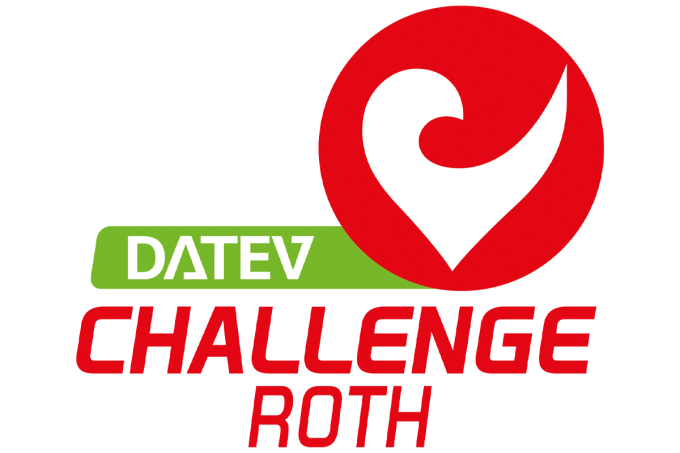
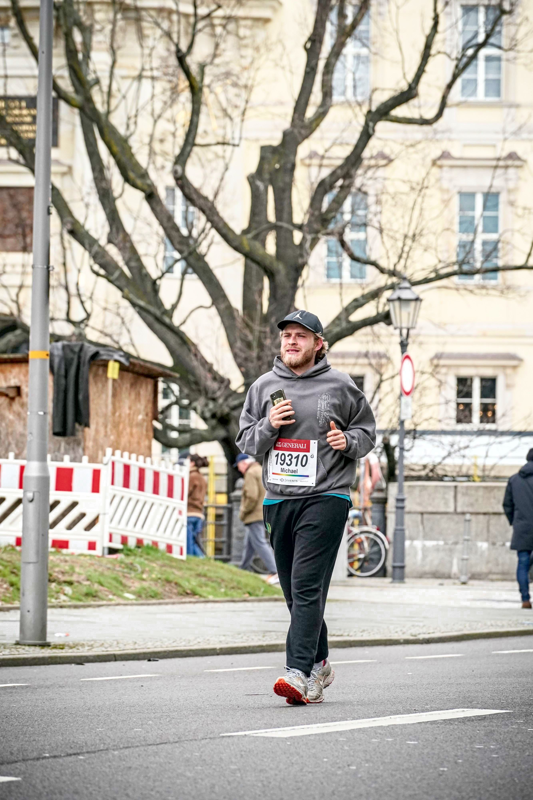

Mein Weg zur Challenge Roth – Wie alles begann
09.09.2025

Hallo und herzlich willkommen auf meinem Blog!
Ich bin Michael, und ich nehme euch mit auf meine Reise zur
Challenge Roth 2026. Eine Langdistanz im Triathlon – 3,8 km Schwimmen, 180 km Radfahren
und 42,2 km Laufen – klingt vielleicht verrückt. Für mich ist es ein
Traum, den ich mir in etwas weniger als einem Jahr erfüllen möchte.
Von 0 auf 21 km – mein Start in Berlin
Noch vor zwei Jahren war ich alles andere als sportlich. Im April 2023 stand ich dann plötzlich am Start meines ersten Halbmarathons in Berlin. Ich war nervös, unsicher und habe mich gefragt, ob ich die 21 Kilometer wirklich durchhalten würde. Es war hart, aber das Gefühl im Ziel war unbeschreiblich – und es hat in mir etwas verändert.
Dieser Moment war der Startschuss für eine Reise, die ich selbst nicht erwartet hätte.
Vom Halbmarathon zum Marathon

Nach diesem ersten Erfolg hatte ich Blut geleckt. In den Monaten danach folgten weitere Halbmarathons und kleinere Läufe. Jeder Wettkampf gab mir neues Selbstvertrauen.
Im September 2024 lief ich meinen ersten Marathon in Berlin. 42,195 km, die mich an meine Grenzen brachten. Ich erinnere mich noch genau, wie sehr die letzten Kilometer wehgetan haben. Aber ich habe es geschafft. Das Ziel zu erreichen, war einer dieser Meilensteine, die man nie vergisst.
Erste Schritte im Triathlon
Laufen war mein Einstieg in den Ausdauersport – doch bald wollte ich mehr. Ich kaufte mir ein Rennrad, verbrachte unzählige Stunden im Sattel und wagte mich ins Schwimmbecken. Schwimmen war dabei die größte Herausforderung: Technik, Ausdauer und die vielen Krämpfe haben mich oft zweifeln lassen.
Im Juni 2025 absolvierte ich dann meinen ersten Triathlon über die olympische Distanz. Zwei Monate später stand ich bei meiner ersten Mitteldistanz an der Startlinie. Beide Wettkämpfe haben mir gezeigt, dass Triathlon nicht nur ein Sport ist, sondern ein Lebensgefühl.
Warum Challenge Roth?
Die Erfahrungen der letzten zwei Jahre haben mich zu einer klaren Entscheidung geführt: Ich will zur Challenge Roth 2026.
Warum genau Roth? Weil dieser Wettkampf einer der größten, emotionalsten und traditionsreichsten Triathlons der Welt ist. Die Stimmung dort ist einzigartig – und ich möchte mich dieser Herausforderung stellen.
Was euch hier erwartet
Dieser Blog ist mein persönliches Fortschrittstagebuch. Ich werde hier ehrlich über meine Erfolge, aber auch über Rückschläge und Fehler schreiben. Denn es ist mir wichtig zu zeigen, dass man nicht perfekt sein muss, um große Ziele anzugehen.
- monatliche Updates zu meinem Training
- Einblicke in meine Wettkämpfe
- Gedanken zu Motivation, Rückhalt durch Familie und Job
- die kleinen und großen Meilensteine auf dem Weg nach Roth
Begleitet mich auf diesem Weg
Ich freue mich, wenn ihr mich auf dieser Reise begleitet. Vielleicht inspiriert meine Geschichte den einen oder die andere, selbst neue sportliche Ziele anzugehen. Und wenn nicht, dann lade ich euch einfach ein, Teil meiner Reise zu sein – mit allen Höhen und Tiefen.
Bis bald,
Michael